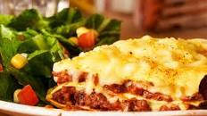

Se trata de un plato que tiene pasta en láminas intercaladas con distintos ingredientes (carnes, verduras, pescados) y que se elabora con bechamel y abundante queso rallado para gratinarla al horno. La palabra «lasaña» proviene del griego «lasanon«, a través del latín «lasanum«, que se refiere al cazo en el que se cocinaba. El propio Cicerón menciona su pasión por el «Laganum», que eran tiras de pasta largas. Según los datos que nos han llegado, es muy posible que en esta época los italianos desarrollaran las máquinas para elaborar la pasta de lasaña.
estas son algunas recetas que puedes hacer con lasagna